解压即用
双击主程序就能启动，本地控制台随程序一起分发。
把每天重复的登录，交给一只安静守在后台的猫。
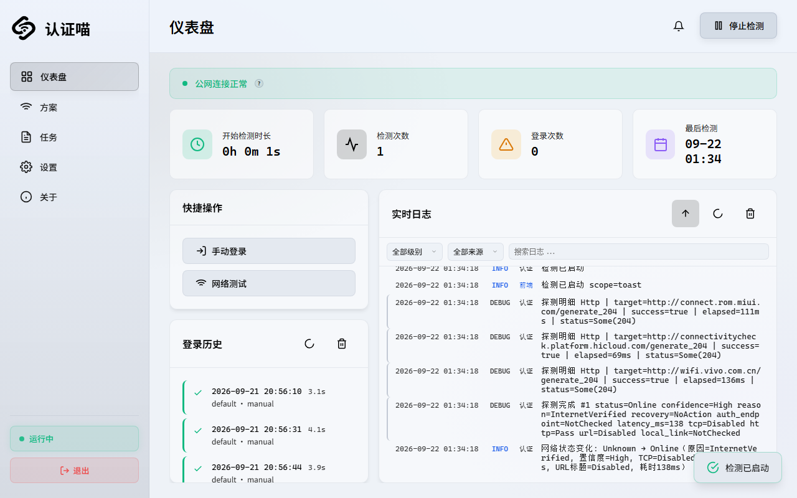
Rust 控制平面 · Windows 便携版 · Docker 多架构 · AGPL-3.0 开源
无需守着认证页，也不用第二天才发现整晚离线。
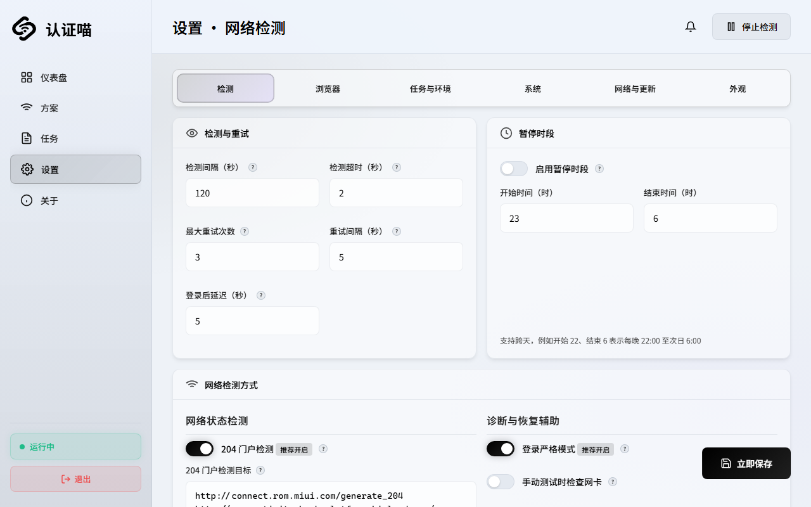
没有常驻大浏览器，没有必须手写的脚本，也没有复杂安装流程。
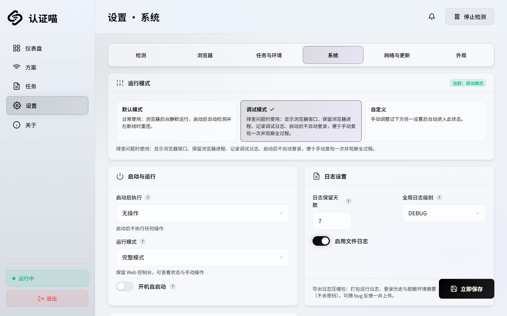
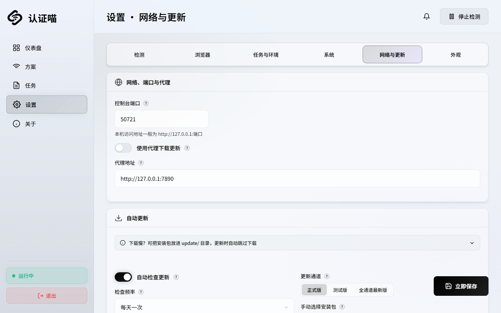
双击主程序就能启动，本地控制台随程序一起分发。
从 GitHub / Gitee 下载现成适配，也能分享自己的任务。
持续探测、断线登录、联网复检，失败自动重试。
Rust 控制平面保持轻量，浏览器与 OCR 按需启动。
网络、日志、登录历史和运行状态，都在一个本地控制台里。
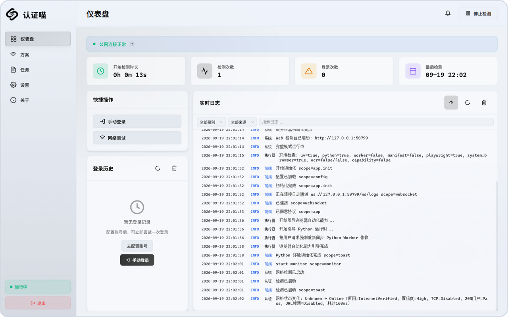
持续探测，结果不是猜出来的。
WebSocket 推送，过程一目了然。
每次成功与失败都有据可查。
校园门户各不相同，适配不必从零开始。
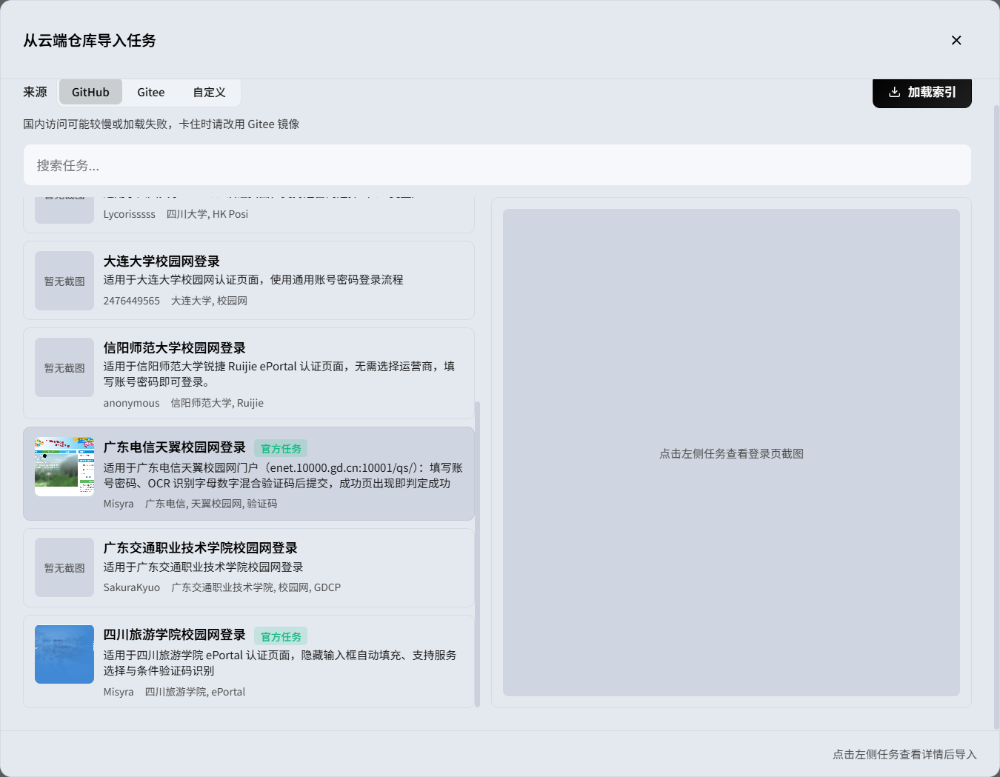
下载，使用，
再把适配分享出去。
内置“通用登录”覆盖常见门户；特殊校园网再从社区仓库补充。
同一份方案里自由选择，速度与兼容性不必二选一。
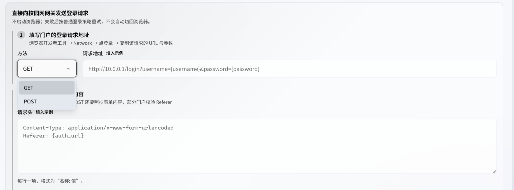
一次请求完成认证，没有浏览器进程，适合接口稳定的门户。
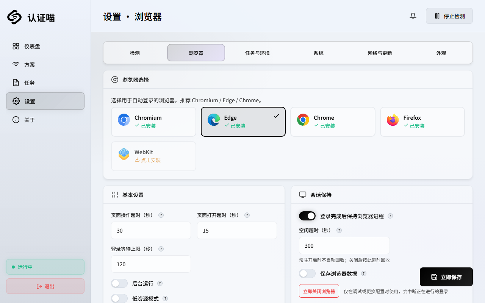
真实打开页面、填表、选运营商、识别验证码并判断成功。
登录完成后再次探测网络——只有真正联网，才会亮起绿色状态。
常驻的只有 Rust 控制平面；重活按需启动，用完自动回收。
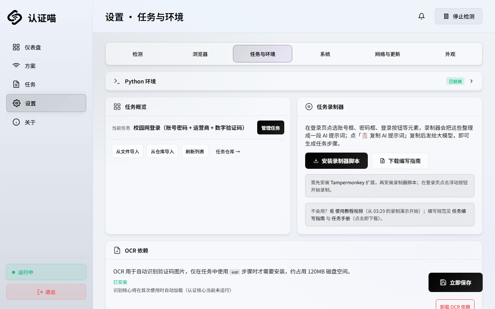
琥珀色短柱 = 浏览器真正存在的几秒钟
内置通用登录任务，不要求先学 JSON、选择器或脚本。
无需安装，双击 campus-auth.exe。
方案、凭据与登录方式都在同一页。
之后的断线、登录与复检自动完成。
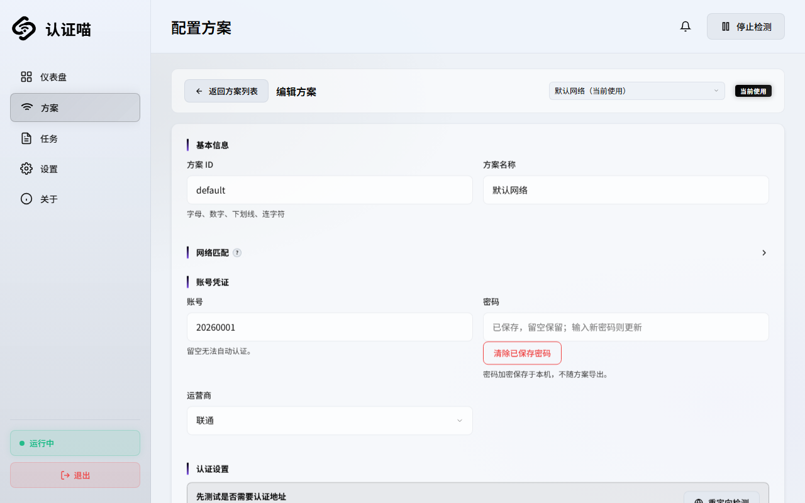
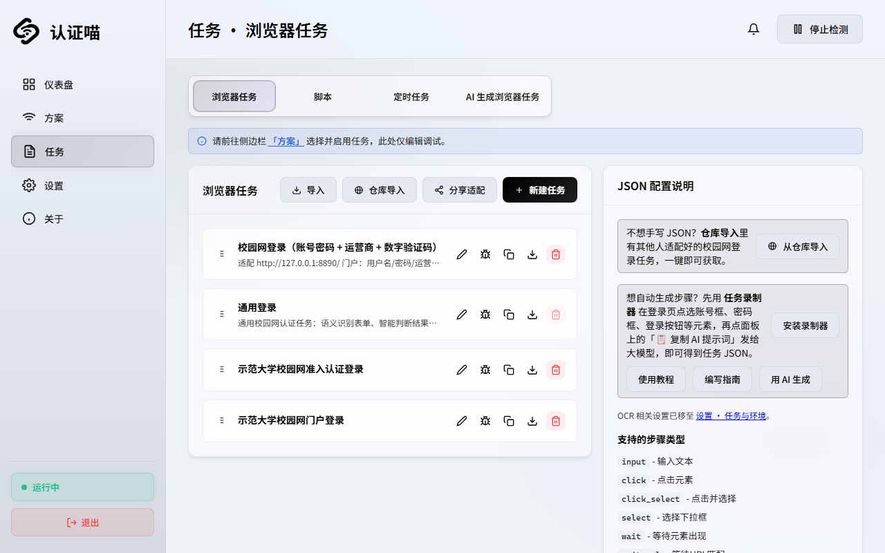
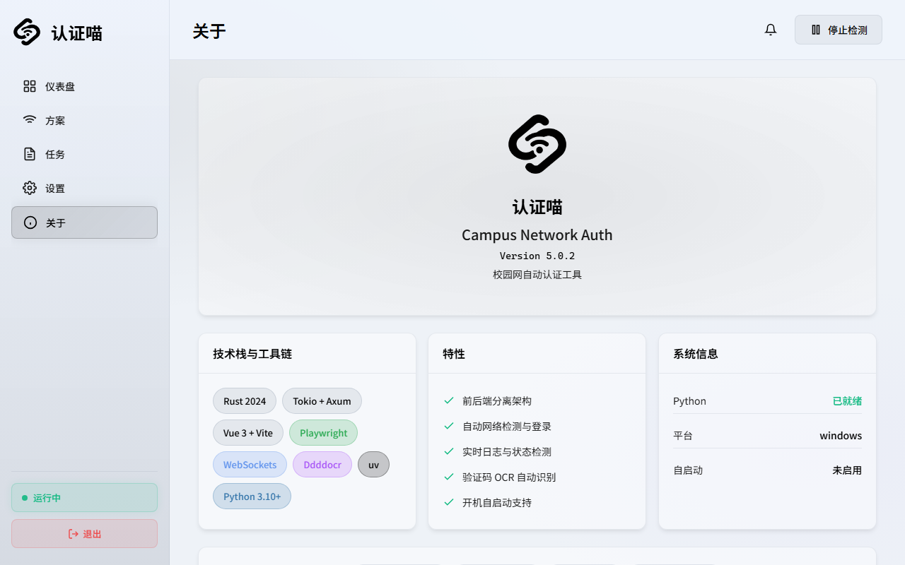